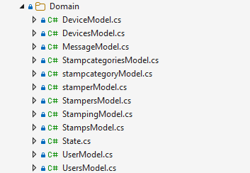

Domain-komponentit
 Domain-kansio sisältää jokaista näkymää vastaavan luokan (esim. `Users.model`). Model-luokka sisältää kaiken näytön tarvitseman toimintalogiikan ja metodit, jotka hakevat tiedot Repository-moduulista State-luokan kautta Services-metodeilla. Model-luokka on tietoinen State-luokasta ja pääsee sen kautta tarpeen mukaan käsiksi muihin tilan model-luokkiin. Näin toteutetaan esimerkiksi tilanne, jossa `DeviceModel` tarvitsee leimauslajeja: se voi kutsua `state.StampcategoryModel`-luokan metodeja, kuten `state.StampcategoryModel.SelectStampcategory(2345);`.
Luokkakaavio
+ Loaded: bool
+ LoginToken: string
+ MessageType: string
+ MessageContent: string"] Users["State.Users.cs
+ UserModel: UserModel
+ LoadUsersAsync()
+ SaveUserAsync()
+ SelectUser(id)"] Devices["State.Devices.cs
+ DeviceModel: DeviceModel
+ LoadDevicesAsync()
+ SaveDeviceAsync()
+ SelectDevice(id)"] Stamps["State.Stamps.cs
+ StampModel: StampModel
+ LoadStampsAsync()
+ MarkTransferedAsync()
+ DeleteTransferedAsync()"] Stampers["State.Stampers.cs
+ StamperModel: StamperModel
+ LoadStampersAsync()
+ SaveStamperAsync()
+ SelectStamper(id)"] StampCategories["State.StampCategories.cs
+ StampcategoryModel: StampcategoryModel
+ LoadStampCategoriesAsync()
+ SaveStampCategoryAsync()
+ SelectStampCategory(id)"] end ServicesBox["Services
(Repository)"] StateBase <-->|Kutsuu metodeja / Palauttaa dataa| ServicesBox
Tila
Tila (State) on luokka, joka hoitaa sovelluksen tilanhallinnan. Jokaisella käyttäjällä on oma instanssinsa tilasta selaimen istunnon ajan, samalla tavalla kuin Web Forms -sovelluksissa `Session`-olio. Tila on osa domain-kerrosta, ja luokka huolehtii domain-objekteista. Koodista näkee, että kun State-luokka luodaan, se saa parametrinaan Services-luokan, jota sitten tila itse tai modelit käyttävät.
Esimerkki UserModel-tiedosto
Kuvasta näkee, kuinka tiedosto on partial class State-luokasta. Kaikki tiedoston metodit ovat State-luokan metodeja. Näin State modostaa domainin ja se sisältää entieteettejä kuten userModel. Niitö sitten käytetään käyttöliittyässä. Kaikki metodit on kuitenkin State-luokan metodeja joilla haetaan ja tallennetaan tietoja services-luokan instanssin kautta. Metodit on ryhmitelty loogisiin ruhmiin omiin partial-tiedostoihin.